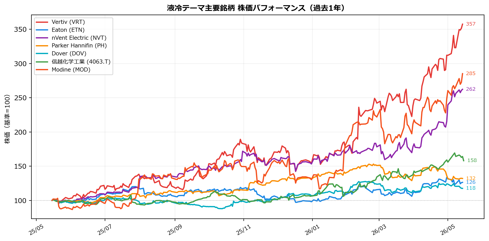
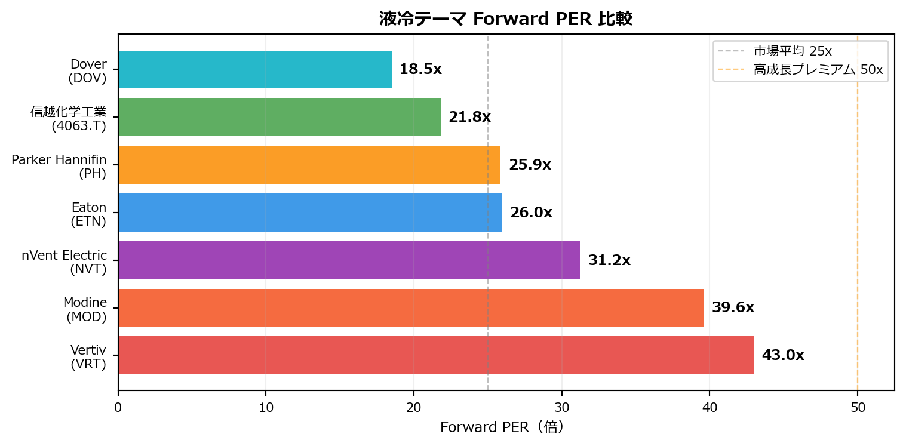

| 時価総額 | Forward PER | EV/EBITDA | 営業利益率 | 売上成長(YoY) | ||
|---|---|---|---|---|---|---|
| カテゴリ | 銘柄 | |||||
| コア（業界パワー） | Vertiv (VRT) | ~$140B | 43.0 | 61.0 | 16.4% | 30.1% |
| Eaton (ETN) | ~$160B | 26.0 | 28.3 | 16.1% | 16.8% | |
| nVent Electric (NVT) | ~$30B | 31.2 | 32.1 | 16.0% | 53.5% | |
| チョークポイント | Parker Hannifin (PH) | ~$110B | 25.9 | 21.9 | 21.5% | 10.6% |
| Dover (DOV) | ~$30B | 18.5 | 16.4 | 16.4% | 10.1% | |
| 信越化学工業 (4063.T) | ~$80B | 21.8 | 14.4 | 21.4% | 1.3% | |
| ロマン枠 | Modine (MOD) | ~$15B | 39.6 | 38.3 | 11.9% | 30.5% |
液冷・冷却：AIラックの「熱の壁」を破る唯一の手段
空冷の限界はラックあたり50kW。GB200 NVL72は130kW超を発熱する。物理法則が液冷への移行を強制した。Microsoftは2025年2月に全新規Azure AIインフラで液冷を義務化した。これは選択肢ではなく、インフラの前提だ。
なぜ今、液冷が投資テーマになるのか
AIチップの熱設計電力（TDP）は世代ごとに暴力的に上昇している。
| GPUアーキテクチャ | TDP（チップ単体） | ラック全体 |
|---|---|---|
| Hopper（H100） | ~700W | ~40kW |
| Blackwell（B200） | ~1,000W | ~120〜130kW |
| Rubin（VR200、次世代） | ~2,300W（予測） | 200kW超（予測） |
空気の熱伝導率は水の1/25。130kWの熱を空気で捌くことは物理的に不可能であり、直接液冷（DLC）への移行は不可逆だ。
世界の液冷市場は2025年時点の約32〜48億ドルから2033〜2036年には170〜270億ドル規模へ成長すると予測され、CAGRは17〜31%と極めて高い。
技術レイヤーとチョークポイント構造
液冷バリューチェーンは4つのレイヤーに分断されており、各レイヤーに独自の参入障壁がある。
| レイヤー | 内容 | 主な上場プレイヤー | チョークポイント度 |
|---|---|---|---|
| システム全体（CDU・ラック） | 冷却水分配装置・ラック統合・制御SW | VRT、ETN、NVT、MOD | ★★★★ |
| UQD継手 | 着脱時の無漏洩コネクタ | PH（首位24.8%）、DOV/CPC（11.5%） | ★★★★★ |
| 冷却液 | 単相・二相誘電流体、水系 | XOM、SHEL、CC | ★★★ |
| TIM（熱伝導材料） | チップ〜コールドプレート間の熱抵抗低減素材 | 信越化学（4063.T） | ★★★★★ |
UQDが最大のチョークポイントである理由
液漏れ1滴で数億円のGPUラックが全損する。UQD自体のコストはラック全体の数%に過ぎないが、故障のリスクは破滅的。データセンター事業者は実績のない新参ベンダーを採用するインセンティブを持たない。リスクの非対称性が参入障壁を形成する構造だ。
市場は完全に寡占化されており、上位5社（PH・Danfoss・Stäubli・CEJN・DOV/CPC）が市場の80%超を独占。UQD市場は2025年の3.9億ドルから2030年には7.5億ドルへCAGR 14.3%で成長予測。
信越化学のTIMが代替不可能な理由
AI最先端チップは1,000W/cm²超の熱流束密度を発生する。信越化学の「TC-PENシリーズ」は、繰り返しの熱サイクルでも硬化・ポンプアウト現象を起こさず、長期間にわたる低熱抵抗を維持する。NVIDIAのGB200以降の世代では、TIMの性能劣化が即座にGPUのサーマルスロットリングを引き起こすため、代替材料の採用は事実上不可能。
主要銘柄マップ
コア投資候補（業界パワー優先）
| 銘柄 | 業界パワー | 概要 |
|---|---|---|
| Vertiv（VRT） | ★★★★★ | NVIDIA公式RVL認定パートナー。バックログ$150B。液冷インフラの絶対王者。NVIDIAとGB200向け7MWリファレンスアーキテクチャを共同開発 |
| Eaton（ETN） | ★★★★★ | NVIDIA RVL認定。電源（UPS・配電）＋液冷CDUの垂直統合で「Grid-to-Chip」を提供。液冷テーマと電力インフラテーマの両取りができる唯一の銘柄 |
| nVent Electric（NVT） | ★★★★☆ | NVIDIA RVLパートナー。売上+53%、バックログ$26B。ラック・PDU・液冷マニホールドの統合ソリューション |
チョークポイント保有者
| 銘柄 | レイヤー | 概要 |
|---|---|---|
| Parker Hannifin（PH） | UQD | UQD世界首位24.8%。本物のチョークポイント。ただし多角化企業のためDC純度は薄め |
| Dover（DOV） | UQD | 子会社CPC（Colder Products）がUQD市場11.5%。PH同様に多角化企業 |
| 信越化学工業（4063.T） | TIM | TIM分野で代替不可能な世界首位。DCへの純度は薄いが素材レイヤーのチョークポイント |
ロマン枠（変革カタリスト型）
| 銘柄 | 概要 |
|---|---|
| Modine Manufacturing（MOD） | CDU特化の純粋プレイ。DC向け売上+78%（直近）。2026年Q4にPT部門（自動車向け）をGenthermへRMT方式でスピンオフ予定。完了後にDC冷却専業銘柄として機関投資家の再分類が起きる可能性。PEGレシオ2.0倍（VRT 3.7倍比で割安）。NVIDIA RVL未認定がリスク |
ドキュメント記録のみ（現時点では投資対象外）
| 銘柄 | 概要 |
|---|---|
| 日本電産 / Nidec（6594.T） | Google OCP「Project Deschutes 5」で2MW超CDUを供給する唯一の日本ベンダー |
| 荏原製作所（6361.T） | 宇宙開発レベルのポンプ技術をDC液冷ポンプに応用。アジア太平洋向けに強み |
| 古河電工（5801.T） | マイクロチャネル構造の銅製コールドプレートで400W/cm²処理実績 |
| 三桜工業（6584.T） | スーパーコンピュータ「富岳」採用の無漏洩配管技術を保有 |
定量分析
バリュエーション・収益性サマリー
株価パフォーマンス比較（過去1年）

Forward PER 比較（割高感の可視化）

投資判断サマリー
| 銘柄 | 方針 | バケット | 根拠 |
|---|---|---|---|
| VRT | 本命候補 | 運用枠 | 液冷王者×NVIDIA RVL×$150Bバックログ。業界パワー最強 |
| ETN | 本命候補 | 運用枠 | RVL認定×電力+液冷の垂直統合。電力インフラテーマとの相乗効果 |
| NVT | 次点 | 運用枠 | RVL認定×バックログ$26B。VRT・ETNより規模が小さい分アップサイドあり |
| MOD | ロマン枠 | リスク枠 | 2026年Q4スピンオフで純粋DC銘柄に変貌するカタリスト内在。PEGレシオ2.0xで割安だが、NVIDIA RVL未認定がリスク |
| PH | 記録のみ | — | UQD世界首位のチョークポイント保有者だが多角化企業で純度薄い |
| DOV | 記録のみ | — | CPC子会社でUQD11.5%。PH同様に純度薄い |
| 信越化学（4063） | 記録のみ | — | TIM世界首位の代替不可能な素材メーカー。フィジカルAIページと合わせて評価 |
VRT vs ETN の選択軸： VRTは液冷に最も純度が高く、ETNは電力インフラとの相乗効果で差別化。電力インフラページとの重複を踏まえてどちらを優先するか検討。